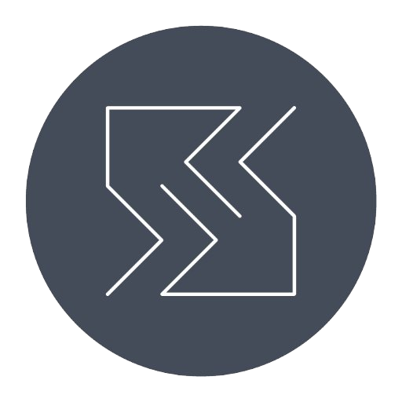
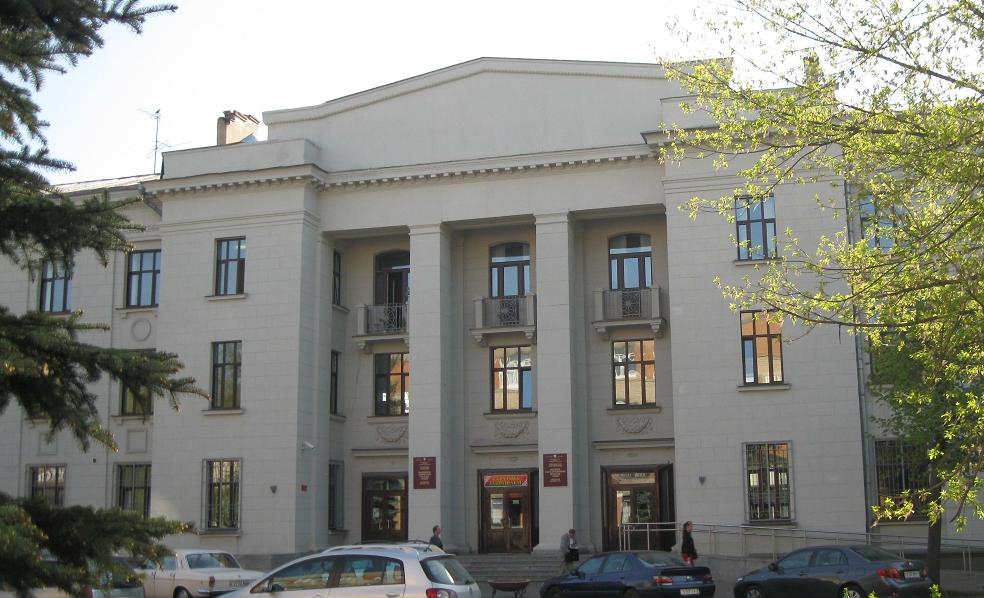

БГАС
Белорусская государственная академия связи

О БГАС
Белорусская государственная академия связи (БГАС), созданная 11 мая 1993 года, является высшим учебным заведением Министерства связи и информатизации Республики Беларусь, финансируемым из республиканского бюджета. Новые времена привели к изменению подхода к профессиональному образованию. Сегодня Белорусская государственная академия связи — учебное заведение с многоуровневой подготовкой. Академия тесно взаимодействует с потенциальными работодателями, в первую очередь, организациями связи: РУП «Белтелеком», ОАО «Белсвязьстрой», РУП «Белпочта», РУП «БРТПЦ» и иными предприятиями, такими, как ОАО «АковаСпецСтрой», Мингоруправление Департамента охраны МВД Республики Беларусь, Научно-инженерное республиканское унитарное предприятие «Институт прикладных программных систем» (НИРУП «ИППС»), учитываются их требования к подготовке выпускников, анализируется рынок труда.
Информация от приёмной комиссии
Контакты
Адрес:
220076, г. Минск, ул. Ф.Скорины, 8/2, учебный корпус № 1
220013, г. Минск, ул. П.Бровки, 14, учебный корпус № 2
210604, г. Витебск, ул. Ильинского, 45, Витебский филиал
Приемная ректора:
Телефон: +375 17 356 96 06
Факс: +375 17 373 44 14
Официальный Интернет-сайт: www.bsac.by
E-mail: bsac@bsac.by
Приемные комиссии:
220013, г. Минск, ул. П. Бровки, 14, тел. + 375 17 379 41 14
210604, г. Витебск, ул. Ильинского, 45; тел. + 375 212 37 46 85